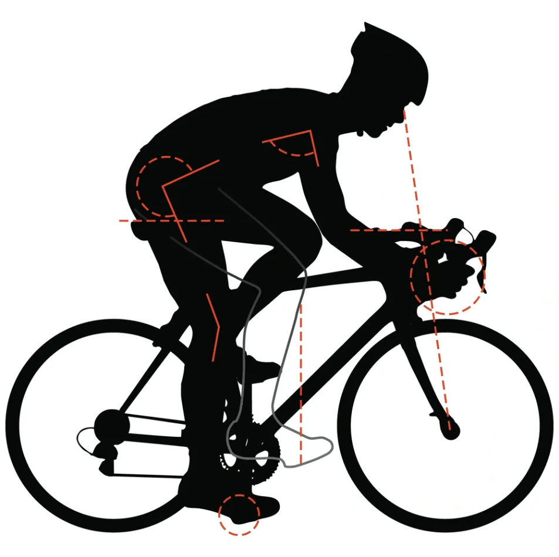

Esse site é para orientação, saúde e bem-estar, promovendo o ciclismo de forma segura e responsável.
Bike fit é um processo que tem por objetivo ajustar a bicicleta ao ciclista, considerando suas medidas, capacidades e necessidades,
objetiva garantir uma união perfeita entre o ciclista e a máquina, melhorando a segurança e aumentando a eficiência da pedalada.
Bicicleta não é só uma atividade de lazer, cada vez mais presente na mobilidade urbana, é uma maneira sustentável de locomover-se e
ajudar a natureza sem a emissão de poluentes, aliviando o caos do tráfego urbano e promovendo saúde.
Caso tenha algum problema osteoarticular, dismetria ou dor crônica, deve-se procurar um bike fit profissional.
Use nossa Calculadora Virtual de BIKE FIT para ajustar o selim da sua bicicleta, posição correta dos pés, guidão e ainda descubra o tamanho
do quadro ideal da sua mountain bike.
